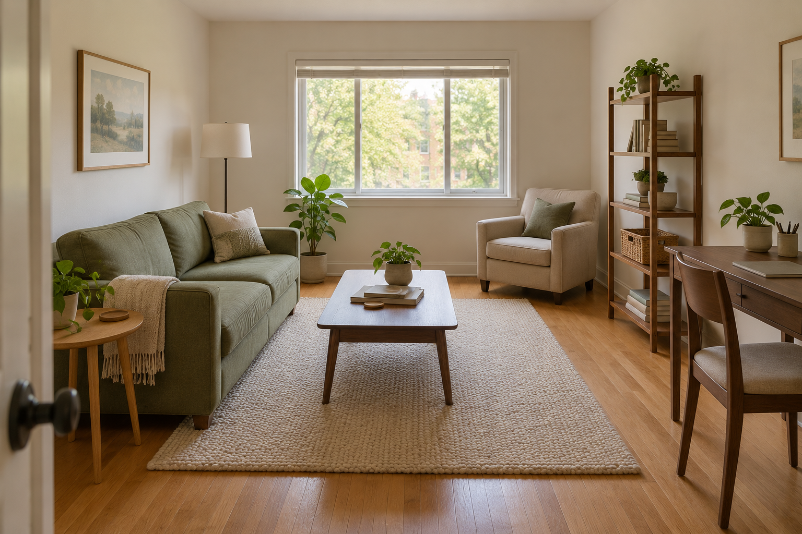
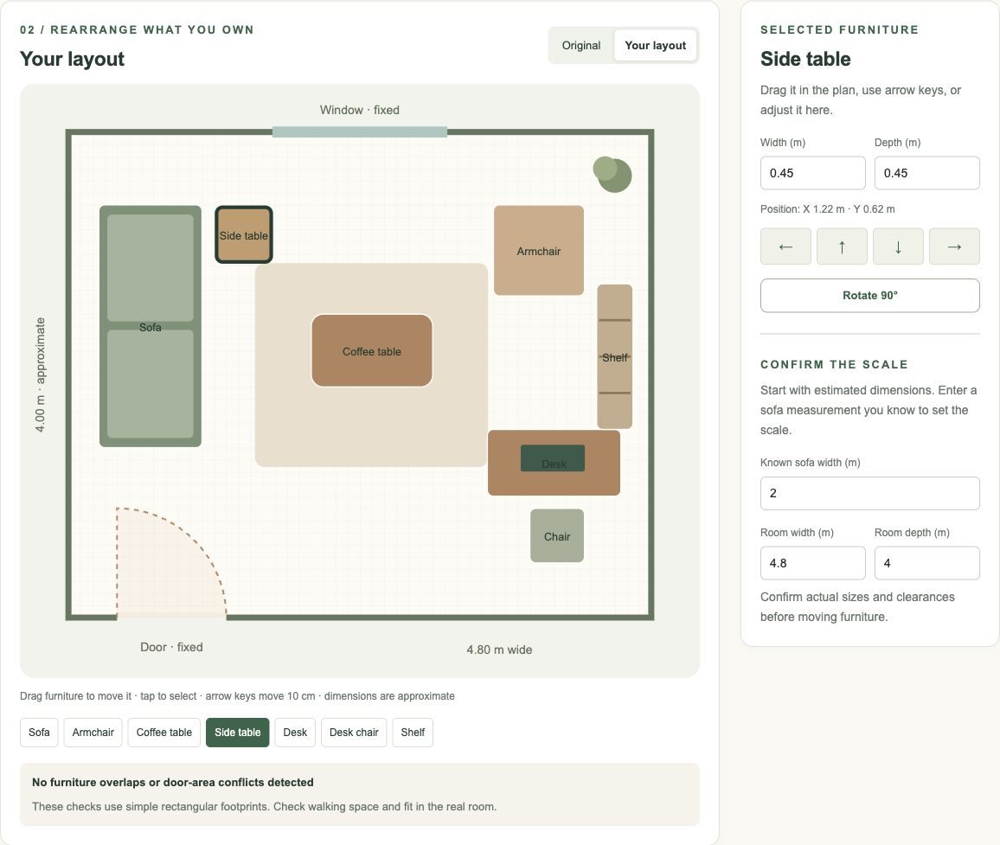

01 / KEEP WHAT WORKS
Choose what matters.
Explore an example room and its floor plan. Set the scale using a furniture measurement you know.

A better layout starts with what you already own. Find practical ways to make space, reduce clutter, and feel more at home—without a complete makeover.
See your furniture from above. Try a new arrangement, check the fit, and compare it with where you started.

Explore an example room and its floor plan. Set the scale using a furniture measurement you know.
Drag and rotate existing furniture in an editable top-down plan. Compare your arrangement with the original and review overlaps.
Save your preferred layout, review furniture dimensions, and return to the editor to refine it. Measure the real room before making changes.